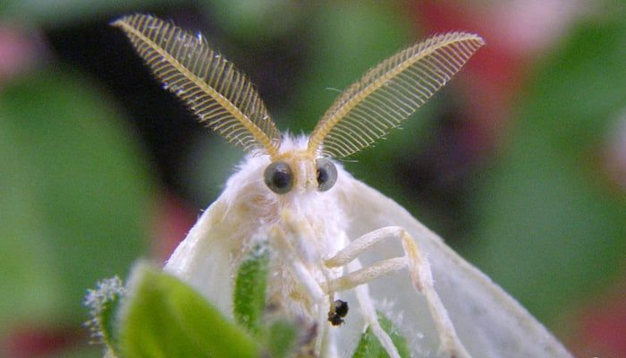
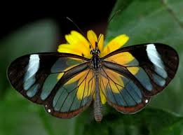

Метелики: опис
Метелики — одні з небагатьох комах, які викликають огиду в людини. Це з найпоширеніших і відомих загонів комах. Науці відомо понад 180 тис. видів цих істот. Їх об’єднали у 126 сімейств . Вчені припускають, що ще приблизно стільки видів науці поки невідомі. Розповімо про цих комах докладніше.
Про те, що таке ефект метелика, чули багато хто. В 1952 завдяки Рею Бредбері і його роману «І гримнув грім» цей термін природничих наук став відомий обивателям. Його суть у тому, що навіть незначні зміни в системі можуть спричинити катастрофічні та непередбачувані наслідки. Так, у книзі загибель одного метелика під чоботом мандрівника у часі призвела до колапсу цивілізації у майбутньому. Достовірно невідомо, чи здатні метелики занапастити цивілізацію, але їхня роль у природі неймовірно важлива.
Метелики: особливості
Слово «метелик», яке вживається для позначення цього виду комах, імовірно чеського або польського походження. У цих мовах дієслово зі схожою вимовою означає ‘кружлятися’ або ‘пересуватися ривками’.
Найбільш ранні останки метеликів знайдені серед скам’янілостей юрського періоду. Вчені вважають, що одним із найдавніших видів метеликів була моль, яка жила190 млн років тому.Метелики є на всіх континентах. Винятком є Антарктида. Вони виживають навіть у суворому кліматі. Наприклад, у Якутії за Північним полярним колом живе вид метеликів під назвою Аполлон. Його побратими у Гімалаях живуть на висоті до 6 тис. метрів над рівнем моря.
Чому крила метеликів такі гарні?
Метеликів не дарма відносять до лускокрилих. Завдяки численним лусочкам незвичайної форми їхні крила мають гарне забарвлення. Лусочки відрізняються структурою, кольором і розташуванням, що надає крилам комахи неповторний вигляд. Деякі види мають лусочки, здатні пропускати сонячне світло. Через це їхнє забарвлення протягом дня може змінюватися.
Класифікація метеликів:
Усього в світовій фауні налічують від 100 до 200 родин (систематики ряду ще не дійшли згоди щодо їхньої кількості, але останнім часом спостерігається тенденція до збільшення кількості родин і зменшення їх об'єму).
-
первинні зубаті молі (Zeugloptera) — нині представлений однією
надродиною Micropterigoidea;
- денні метелики
- нічні метелики
-
безхоботкові (Aglossata) — представлений однією надродиною
Agathiphagoidea з єдиною родиною Agathiphagidae;
- вузькокрилі
- різнокрилі
- гетеробатмії (Heterobathmiina) — представлений однією надродиною Heterobathmioidea, яка включає єдину родину Heterobathmiidae;
- хоботкові (Glossata) — найчисленніший підряд, до якого входить більш ніж 150 тисяч видів.